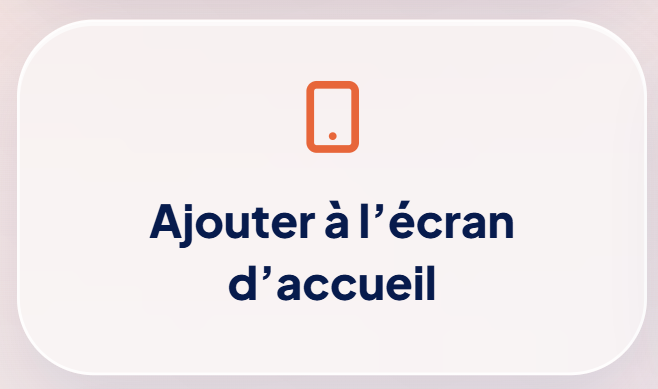

Le client scanne votre QR Code ou approche votre carte NFC.
Carte chauffeur à garder sur mobile
Devenez une icône sur le téléphone de vos clients
Avec LinkyCab, vos passagers scannent votre QR Code ou votre carte NFC, ouvrent votre carte digitale et peuvent l’ajouter à leur écran d’accueil pour vous retrouver en un clic.
Comme une mini-application, sans téléchargement.
QR Code · NFC · Écran d’accueil · WhatsApp · Réservation

Un accès direct après la course
Différenciant
Votre carte sur l’écran d’accueil du client
Le client peut ajouter votre carte LinkyCab à son téléphone comme une mini-application. Résultat : il vous retrouve plus facilement pour une prochaine course.
Il ouvre votre carte chauffeur.
Il l’ajoute à son écran d’accueil pour vous retrouver plus tard.
- Une icône visible sur son téléphone
- Un accès direct à votre carte
- Pas besoin de chercher votre numéro
- Pas besoin d’installer une vraie application
- Plus de chances d’être recontacté en direct
Ne laissez pas vos clients repartir uniquement avec un souvenir. Laissez-leur un accès direct à vous.
↗
Ajouter à l’écran d’accueil
Votre carte reste accessible en un geste après la course.

Le problème
Un client satisfait peut devenir un client privé… à condition de pouvoir vous retrouver facilement.
Le client repart, oublie votre nom, reprend une application par réflexe et vous perdez une course directe possible. LinkyCab vous aide à rester présent sur son téléphone.
Le client repart et oublie votre nom
Il reprend une application par réflexe
Vous perdez une course directe possible
Simple et direct
Comment ça fonctionne ?
Le client scanne votre QR Code ou approche votre carte NFC
Il accède à votre carte digitale
Il vous contacte, réserve ou ajoute votre carte à son écran d’accueil
Présence mobile
Restez visible après la course
Votre carte peut devenir un raccourci sur le téléphone du client : un accès direct pour appeler, réserver ou vous recommander plus tard.

Réputation
Obtenez plus d'avis Google
Après chaque trajet, vos clients peuvent laisser un avis en quelques secondes.

Relation directe
Constituez votre base clients
Vos clients peuvent vous transmettre leurs coordonnées afin d'être recontactés directement.

Fonctionnalités
Tout ce que le client peut faire depuis votre carte
Appeler, envoyer un WhatsApp, réserver, laisser un avis Google, ajouter le contact, laisser ses coordonnées et garder votre carte sur son écran d’accueil.

Réserver un trajet
Le client peut demander une course directement depuis votre carte.
Contact rapide
Appel, SMS ou WhatsApp en quelques secondes.
Services visibles
Gares, aéroports, trajets privés, accompagnement ou mise à disposition.
Avis Google
Le client peut laisser un avis en quelques secondes après la course.
Différenciant
Ajouter à l’écran d’accueil
Le client peut garder votre carte comme une mini-application, sans téléchargement depuis l’App Store.
Laisser ses coordonnées
Le client peut vous laisser ses informations pour être recontacté.
Bénéfices business
Chaque passager satisfait peut devenir un contact direct
Chaque passager satisfait peut devenir un contact direct, une réservation future ou un avis Google supplémentaire.
Rester visible après la course
Votre carte peut rester accessible depuis le téléphone du client.
Récupérer plus de clients privés
Vous facilitez le réflexe de réservation directe.
Réduire la dépendance aux plateformes
Vous construisez une relation directe avec vos passagers.
Obtenir plus d’avis Google
La demande d’avis est accessible au bon moment.
Développer une base de contacts
Les clients intéressés peuvent laisser leurs coordonnées.
Faciliter les réservations directes
Appel, WhatsApp et réservation restent à portée de main.
Pilotage mobile
Pilotez votre carte et vos futurs clients
Depuis votre téléphone, suivez les vues de votre carte, retrouvez votre QR Code, récupérez les coordonnées des clients intéressés et modifiez vos informations à tout moment.
Votre carte travaille pour vous, même après la course.
Vues de la carte
Contacts générés
QR Code
Base de contacts
Modification du profil
Tarif unique
Une présence mobile premium pour 29 € / an
Un outil simple pour rester visible, récupérer des contacts et faciliter les réservations directes.
29 € / an
Une seule course privée récupérée peut rentabiliser l’année.
ou 3,90 € / mois
Créer ma carteFAQ
Tout ce qu’il faut savoir
Le client doit-il installer une application ?
Non, le client n’a rien à installer depuis l’App Store. Il ouvre votre carte depuis son navigateur et peut l’ajouter à son écran d’accueil si son téléphone le permet.
Peut-il ajouter ma carte à son écran d’accueil ?
Oui, il peut ajouter votre carte LinkyCab à son écran d’accueil lorsque son téléphone et son navigateur le permettent, comme une mini-application.
Est-ce que ça fonctionne avec QR Code ?
Oui. Le client scanne votre QR Code et accède directement à votre carte chauffeur.
Est-ce que ça fonctionne avec NFC ?
Oui. Vous pouvez aussi partager votre carte avec une carte NFC compatible.
Puis-je modifier mes informations ?
Oui. Vous pouvez mettre à jour votre profil depuis votre espace chauffeur.
Puis-je suivre les vues de ma carte ?
Oui. Votre espace chauffeur vous permet de suivre les vues de votre carte.
Puis-je récupérer les coordonnées des clients ?
Oui. Les clients intéressés peuvent laisser leurs coordonnées pour être recontactés.
Combien coûte LinkyCab ?
LinkyCab coûte 29 € / an, ou 3,90 € / mois.